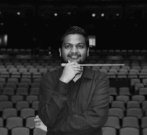
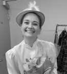

Production Team Members

Joyce Brommer (Assistant Stage Director - Il Matrimonio Segreto) is a native
of Philadelphia who started her career as a Physical Education
teacher and ended it as a Music Educator. As a mezzo-soprano she has
sung in the choruses of Opera Delaware, Center City Opera, Mozart
and Friends, Concert Opera of Philadelphia and DVOC. For the latter
she has directed Carmen (2006), Amahl and the Night Visitors (2002,
2008), Suor Angelica (2008, 2018), La bohème (2009), Don Pasquale
(2011) and The Telephone (2019). Miss Brommer has been involved with
DVOC for 23 years where she has worked on every aspect of the
company and is an officer on the Board of Directors.

Ryan Colbert (Artistic Director and Contessa cover) has been praised for “rendering text with a touching tenderness” (Berkshire Fine Arts) and making "a feast of quirky dramatic contrasts...while smoothing it with a velvety vocal line” (ArtsKnoxville). This season, she will sing Frasquita (Carmen) with Bella Diva Productions and again with the Orchestra Society of Philadelphia, cover Mother and the Witch (Hansel and Gretel) with Wilmington Concert Opera, Mother and Witch (Hansel und Gretel) with OOT Philadelphia, and Melisande (Pelleas et Melisande) with Amici Opera. Recent engagements include Nile in the world premiere of J Marchand Knight's "Cleopatra Built" and Tatyana cover (Eugene Onegin) with Opera Queens, Mimi (La boheme) and Nella (Gianni Schicchi) with Moon River Opera, Rosie in the world premiere of Frank Pesci's Royal Flush with Marble City Opera, and Alice Ford (Falstaff) with the International Summer Opera Festival of Morelia. She currently serves as Artistic Director of Delaware Valley Opera Company and Co-manager of Opera on Tap's Philadelphia chapter.
Maria Dell'Orefice (Music Director - Il Matrimonio Segreto) a classical pianist and avid violinist, has shared the stage with a multitude of performers including Alexander Markov, Francesca DePasquale and Chris Botti. While Maria frequently presents solo and collaborative performances in the Philadelphia area, she has also performed solo piano in Carnegie Hall’s Weill Recital Hall as a result of winning the Semper Pro Musica Competition, Elite International Music Competition, and Crescendo International Piano Competition. Maria recently returned from a program in Mondavio, Italy in which she accompanied opera singers in Mozart’s Don Giovanni. She is also a recipient of the Association of Church Musicians of Philadelphia Organ Grant, which funds private organ lessons, and is currently the organist at Our Lady of the Assumption Roman Catholic Church in Strafford, PA. Maria has studied under Charles Abramovic, Lambert Orkis, Jane Abbott-Kirk, and Sheila Paige and is an advocate of the Taubman technique. She earned her B.M. in Piano Performance from Baylor University in Waco, TX and earned a double M.M. in Piano Performance and Collaborative Piano from Temple University.

Connie Koppe (Stage Director - Il Matrimonio Segreto) is pleased to add the new children’s opera Liebovar to the list of operas she has directed for The Delaware Valley Opera Company. Directing seemed to be a natural next step for singer and arts educator, Connie Koppe, who began directing for DVOC in 1997 with a production of The Merry Widow. Connie got her directing training from 14 years of watching professional directors while singing with the Opera Company of Philadelphia chorus and The Pennsylvania Opera Theater. For DVOC she has also directed Carmen, The Barber of Seville, The Marriage of Figaro, The Magic Flute, Cenerentola, Don Giovanni, Il Tabarro and Amahl and the Night Visitors. For several years, she was the Stage Director for the Philadelphia Christmas Revels and she directed a production of The Pirates of Penzance for the Philadelphia Biblical University’s opera workshop and Don Giovanni for Opera Libera. Connie holds a BS in Music Education and a Master of Music in Vocal Performance.

Caroline Pashos (House Maid and Assistant to the Assistant Director - Il Matrimonio Segreto) is thrilled to return for her fourth season with the Delaware Valley Opera Company. This season marks her debut as both an Assistant Director and a Stage Manager for the July production of Il matrimonio segreto. She also takes the stage as a member of the DVOC Chorus for the 2024 Summer Opera Festival in Le nozze di Figaro. Her DVOC debut occurred in 2019 as part of the chorus for their production of La rondine. Other performances include Carmen, The Merry Widow, Dialogues of the Carmelites, Les contes d’Hoffmann, Susannah, Cavalleria rusticana/I Pagliacci, and Amahl and the Night Visitors. She also appeared in the premieres of Liebovar and Take My Otherness. A native of suburban Philadelphia, she graduated in 2017 from Temple University with a Bachelor of Arts in Theatre. Her interests outside of theatre include astronomy, baseball, motorsport, nature, and soccer. She would like to thank her family for all their incredible support.
Natalie Pica (Assistant Stage Director - Il Barbiere Di Siviglia) is thrilled to be assistant directing and stage managing Cavalleria rusticana and I Pagliacci. Previously, she has held this position for other DVOC productions, like The Tales of Hoffmann and Carmen, and has directed a production of Amahl and the Night Visitors. Some roles with DVOC include Colette (Verecundia), Valencienne (The Merry Widow), Alicia Silberklang (L'impresario), and Giannetta (L'elisir d'amore). She also performs in the chorus of Boheme Opera New Jersey and others.
Rebecca Sacks (Stage Director - Le Nozze Di Figaro) is known for her dynamic stage presence, smart musicality, and stylistic versatility. With a voice described as “tuneful” and “powerful,” she has recently been heard as Sara in Roberto Devereux with St. John’s in the Village, Gertrude in Boheme Opera New Jersey’s Hansel and Gretel, and The Witch in Philadelphia Opera on Tap’s production of the same opera. Other roles include Fricka (Das Rheingold, Die Walküre), Nancy and Mum (Albert Herring), Komponist (Ariadne auf Naxos), Queen Alkmene (Die Liebe der Danae), Donna Elvira (Don Giovanni), and Baba (The Medium). A champion of new music, Ms. Sacks has premiered works with the Oregon Composers’ Forum, the TaiHei Ensemble, and several university composition departments. She holds degrees from Stanford University and the University of Georgia and has received awards from the American Prize in Opera, the Metropolitan Opera National Council Auditions, the Orpheus Competition, Opera Connecticut, and NATSAA.

Andrew Samlal (Music Director - Le Nozze Di Figaro) is an emerging conductor, pianist and vocal coach Andrew Samlal is passionate about achieving the most sublime, transcendent musical experience possible!
Originally hailing from the Caribbean twin isle of Trinidad and Tobago, Philadelphia based Conductor, Pianist and Vocal Coach Andrew Samlal is swiftly establishing himself in the world of Symphonic, Operatic and Balletic music.
Samlal is quickly entering the international stage through his recent engagement with the Canton Symphony Orchestra as their 2023-2024 conducting fellow. He also enjoyed the position as Guest Faculty Conductor of Temple University’s OWLchestra ensemble for the 2024 spring semester. Upcoming engagements include Music Director of Delaware Valley Opera Company’s production of Mozart’s Le Nozze di Figaro and Conductor of Archbishop Caroll Theater Society’s production of “The Little Mermaid”.

Jackie Scheiner (Assistant Stage Director - Le Nozze Di Figaro) received her Bachelor’s of Music and Theatre from Ithaca College. She currently studies voice with Paul Spencer Adkins. Jackie is passionate about all aspects of performing arts, as well as social justice, zoology, and education. Jackie also performs with the Abington Choral Club, and recently made her debut with the Savoy Company of Philadelphia in their 2023 production of The Pirates of Penzance. She would like to thank her partner, her family, Joyce, Connie, Joe, and the cast and crew of Susannah for supporting her on this journey.
Theresa Seri (Stage Director - Il Barbiere Di Sivigila) has performed with the Opera Company of Philadelphia, the Pennsylvania Opera Theater, DVOC, Camerata Opera, Boheme Opera New Jersey, Philadelphia Singers, Shawnee Playhouse, Sunoco Welcome America, Casals Festival in San Juan. Operatic roles include Charlotte (Werther), Dorabella (Cosi fan tutte), Tisbe (La Cenerentola), Mercedes and Carmen (Carmen), Hansel (Hansel and Gretel), Orlofsky (Die Fledermaus), Rosina (The Barber of Seville), Mother Marie (Dialogues of the Carmelites), Siebel (Faust), Zita (Gianni Schicchi) and Dinah (Trouble in Tahiti), which she also directed. Musical theater credits include Sarah (Guys and Dolls), Aldonza (Man of La Mancha), Nettie (Carousel). Directorial credits include The Merry Widow, Carmen, L’elisir d’amore, The Medium, Gianni Schicchi, Cosi fan tutte, The Magic Flute, Rigoletto, Lucia di Lammermoor. Assistant Director and Stage Manager credits include The Magic Flute, Madama Butterfly and numerous musical theater productions.